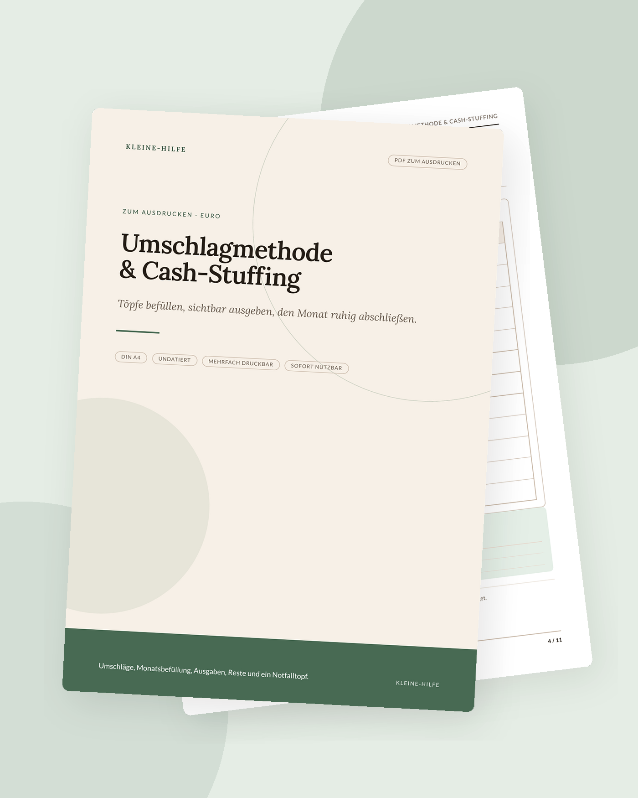

Start · Ratgeber · Umschlagmethode erklärt
Finanzen
Umschlagmethode erklärt
Die Umschlagmethode teilt dein verfügbares Geld in sichtbare Töpfe. Ob als echte Umschläge oder als Linien auf dem Papier: Du siehst, welcher Bereich noch Luft hat – und welcher schon am Limit ist.

Die Umschlagmethode ist eine alte, sehr unmittelbare Art zu budgetieren: Für jede Ausgabenart gibt es einen Umschlag. Zu Beginn des Zeitraums wandert ein festgelegter Betrag hinein. Im Laufe der Tage zahlst du aus diesem Umschlag. Ist er leer, ist in dieser Kategorie für den Zeitraum Schluss – oder du entscheidest bewusst, aus einem anderen Topf umzuschichten.
Unter Namen wie Cash Stuffing ist derselbe Gedanke wieder sichtbarer geworden. Neu ist nicht das Prinzip, sondern oft nur die Form: Schmuckumschläge, Tracker, Videos. Der Kern bleibt schlicht und funktioniert auch völlig unspektakulär auf einem Blatt Papier in Euro.
Die Idee hinter der Methode
Viele Haushalte haben formal genug Geld „auf dem Konto“, fühlen sich aber trotzdem unsicher, weil alles in einem Topf liegt. Die Miete sitzt neben dem Restaurantbesuch, der Notgroschen neben dem Wocheneinkauf. Die Umschlagmethode trennt diese Zwecke sichtbar. Du gibst jedem Zweck eine Grenze, bevor der Monat oder die Woche beginnt – nicht erst, wenn der Kontostand überrascht.
Sie ersetzt kein Haushaltsbuch, sondern ergänzt es oft. Das Haushaltsbuch zeigt das große Bild (Einnahmen, Fixkosten, Monat). Die Umschläge steuern den beweglichen Teil, bei dem du im Alltag Entscheidungen triffst.
So funktioniert sie im Alltag
- Rechne zuerst deine Einnahmen minus Fixkosten. Was bleibt, ist der Teig, aus dem die Umschläge geformt werden. Ohne diese Rechnung bleiben die Beträge Wunschdenken.
- Lege fest, für welchen Zeitraum du befüllst: oft einen Monat, manchmal zwei Wochen, wenn das Geld in der Monatsmitte knapp wird.
- Verteile den verfügbaren Betrag auf wenige Kategorien. Die Summe der Umschläge darf nicht größer sein als der verfügbare Betrag.
- Notiere jede Ausgabe im passenden Umschlag oder auf dem Begleitblatt. Der aktuelle Rest soll ohne Rechnen im Kopf erkennbar sein.
- Am Ende des Zeitraums überträgst du Reste bewusst: bleiben, umschichten oder einem Sparziel zuführen.
Die Vorlage zur Umschlagmethode bildet genau diesen Ablauf auf Papier ab: Töpfe, Beträge, Ausgabenlinien, Übertragung. Du kannst sie mit echten Umschlägen kombinieren oder rein als Tracker nutzen.
Kategorien wählen, ohne sich zu verzetteln
Weniger Töpfe sind besser als ein System, das du nach zehn Tagen nicht mehr pflegst. Typische variable Kategorien sind zum Beispiel Lebensmittel und Drogerie, Alltag und Haushalt, Mobilität, Freizeit, persönliches Geld. Fixkosten wie Miete musst du nicht in einen Umschlag stecken, wenn sie ohnehin per Lastschrift gehen; sie gehören aber in die Rechnung vorher.
Zu kleinteilige Töpfe („Brot“, „Obst“, „Kaffee unterwegs“) erzeugen Buchführung, die den Nutzen auffrisst. Zu große Töpfe („Sonstiges“) machen die Grenze wieder unsichtbar. Wenn eine Kategorie ständig überläuft, ist sie entweder zu knapp angesetzt oder sie vermischt zwei verschiedene Zwecke.
Bargeld, Konto oder Papier
Klassisch liegt Bargeld in physischen Umschlägen. Das ist greifbar und begrenzt das Ausgeben sehr direkt. Es hat auch Nachteile: Sicherheit, Wechselgeld, Online-Einkäufe, gemeinsame Konten. Deshalb arbeiten viele heute mit getrennten Unterkonten, Tagesgeld-Töpfen oder einfach mit einem Blatt, auf dem die „Umschläge“ nur rechnerisch existieren, während das Geld auf dem Girokonto bleibt.
Entscheidend ist nicht die Optik, sondern die Regel: Du siehst den Rest, bevor du ausgibst, und du entscheidest, bevor der Topf leer ist – nicht danach. Wer gerne mit einem spielerischen Anreiz arbeitet, kann einzelne Ziele mit einer Sparchallenge begleiten. Das bleibt ein Hilfsmittel, kein Ersatz für den Überblick.
Was mit Resten und Engpässen geschieht
Ein Rest am Ende des Zeitraums ist ein Erfolg der Planung, kein „ungenutztes“ Geld, das schnell ausgegeben werden muss. Du kannst ihn übertragen, in einen Notgroschen legen oder einem konkreten Ziel zuordnen. Ein Engpass ist umgekehrt ein Signal: Entweder war der Ansatz zu knapp, oder es kam etwas Unerwartetes. Umschichten ist erlaubt, sollte aber sichtbar bleiben – sonst entsteht wieder ein unsichtbarer gemeinsamer Topf.
Wichtig: Die Methode ist kein Wettkampf. Einen Umschlag bewusst aufzustocken, weil Besuch kommt oder das Fahrrad in die Werkstatt muss, ist eine Entscheidung, kein Regelbruch.
Unregelmäßige Posten extra halten
Geburtstage, Kfz-Steuer, neue Brille, der jährliche Beitrag: Solche Posten sprengen Umschläge, wenn sie im Alltagsbudget überraschen. Dafür eignen sich gesonderte Rücklagen, oft Sinking Funds genannt. Du legst monatlich einen kleinen Betrag für einen bekannten, aber unregelmäßigen Zweck zurück. Der Rücklagen- und Sinking-Funds-Planer hält diese Töpfe getrennt von der wöchentlichen Lebenshaltung.
Zusammen mit Sparzielen und einem Notgroschen entsteht so ein kleines System aus Alltags-Umschlägen und ruhigeren Reserven. Mehr dazu, wie du das große Bild führst, steht in der Anleitung zum Haushaltsbuch.
Was die Methode nicht leistet
Passende Planer zum Ausdrucken
Die Artikel bleiben auch ohne Kauf nützlich. Wenn du die Schritte gerne auf Papier festhältst, findest du hier ruhige Vorlagen dazu.


Weitere Ratgeber
- ADHS im Alltag organisierenDrei Prioritäten, ein Gedankenparkplatz und Routinen, die tragen, statt zu erziehen.
- Haushaltsbuch führen: eine AnleitungFixkosten zuerst, den Monat in Euro planen und in kurzer Zeit abschließen – ohne schlechtes Gewissen.
- Mental Load reduzierenUnsichtbare Aufgaben sammeln, sortieren und teilen – ohne große Debatte am Anfang.
- Meal Prep für AnfängerZuerst planen und Vorräte prüfen, dann kochen. Ein Restetag gehört dazu.
- Gewohnheiten aufbauenWenn-Dann-Pläne, Gewohnheiten an Bestehendes hängen und Fortschritt sichtbar machen – ohne Punktekonto.
- Lernplan für PrüfungenVom Termin rückwärts planen, Stoff portionieren, aktiv üben und Puffer offen lassen.
- Neujahrsvorsätze durchhaltenWenige konkrete Vorhaben, in Wochen übersetzt, mit einem undatierten Blick aufs Jahr.